StoSiS – Methodenhandbuch
Modell, Annahmen und Verfahren
StoSiS ist eine dynamische Fließschemasimulation für die Feststoffverfahrenstechnik. Dieses Handbuch beschreibt, was das Programm rechnet und wie: die Annahmen des Modells, die Verfahren, ihre Grenzen und wie sie geprüft sind. Die meisten Kapitel folgen demselben Aufbau – Zweck, Annahmen, Verfahren, Grenzen, Prüfung.
1Überblick
Ein Flowsheet besteht aus Units, deren Ein- und Ausgänge über Ströme verbunden sind. Ein Strom trägt die Massenstromdichte über der Partikelgröße, getrennt nach Stoffen, dazu Temperatur und Druck. Gerechnet wird in Zeitschritten: In jedem Schritt verarbeitet jede Unit genau eine Zeitscheibe ihrer Eingänge.
Units können Zufallsprozesse enthalten, etwa einen schwankenden Teilungsanteil. Ein Ergebnis ist dann keine einzelne Kurve, sondern eine Statistik über viele Läufe mit verschiedenen Zufallszahlen.
Für die Partikel gibt es zwei Darstellungen, die für eine ganze Simulation gelten:
- Kontinuum: Der Strom ist eine Verteilung auf einem festen Größenraster.
- Partikelmodus: Der Strom ist eine Liste gewichteter Monte-Carlo-Partikel, hier Karten genannt. Jede Karte trägt eine Größe und eine Masse je Stoff (Kapitel 9).
Der Rechenkern ist reines C++ ohne Abhängigkeit von der Oberfläche; er läuft auch in automatischen Tests und im Batchbetrieb. Die Oberfläche (Qt) dient zum Aufbauen, Einstellen und Auswerten. Ein Flowsheet lässt sich mit allen Einstellungen als JSON-Datei speichern (Kapitel 3).
Umfang
Verfügbare Units: Inlet, Outlet, Merger, Splitter (fest oder schwankend), Behälter (vier Mischungen oder Charge) und eine größenabhängige Verzögerung. Im Partikelmodus rechnen alle Units. Prozesse, die Partikel verändern – Koagulation, Bruch, Wachstum, Keimbildung –, sind nicht enthalten.
2Grundannahmen
- Ein Strom wird durch die Massenstromdichte je Stoff über der Partikelgröße beschrieben. Eine Partikelzahl wird nicht gespeichert; sie folgt bei Bedarf aus Masse, Größe und Dichte.
- Partikel sind Kugeln aus Feststoff ohne Poren; ihre Dichte ist die Feststoffdichte des Stoffs.
- Temperatur und Druck sind Eigenschaften jedes Stroms und wandern mit dem Material. Es gibt keine globale Umgebungstemperatur.
- Ein Inlet liefert genau einen Stoff. Mischungen entstehen, wenn Ströme in einem Merger zusammenlaufen.
- Units rechnen ohne Iteration, Schritt für Schritt. Der Zeitschritt muss kleiner sein als die kürzeste Verweil- oder Rücklaufzeit im Flowsheet.
- Zufall entsteht nur in Units mit einem Zufallsprozess. Ein Flowsheet ohne solche Units wird einmal gerechnet.
- Intern wird in SI-Einheiten gerechnet (m, kg, s, K, Pa); die Oberfläche zeigt Partikelgrößen in µm.
3Flowsheet und Zeitschritte
Material soll in der Zeit durch das Flowsheet laufen, auch durch Rückführungen und durch Units mit Gedächtnis (Hold-up). Wie StoSiS das Flowsheet dafür einteilt, zeigt das Fenster „Struktur“; mit allen Einstellungen lässt es sich als Datei speichern.
3.1Zeitschritte und Reihenfolge
Annahmen
Jede Unit hat nummerierte Ein- und Ausgänge (Ports); an jedem Port hängt höchstens eine Verbindung. Aufteilen und Zusammenführen geschieht nur in Splittern und Mergern, sodass die Massenbilanz an jedem Knoten eindeutig ist. Alle Units teilen sich eine globale Uhr tk = k·Δt.
Verfahren
In jedem Zeitschritt (Makroschritt) rechnet jede Unit genau einmal: Sie erhält die Ströme an ihren Eingängen und liefert die Ströme an ihren Ausgängen. Was zwischen zwei Schritten in einer Unit steckt, ist ihr innerer Zustand.
Die Units rechnen der Reihe nach in Flussrichtung und lesen die Ausgänge ihrer Vorgänger aus demselben Schritt, wie beim Gauß-Seidel-Verfahren. Die Reihenfolge liefert eine topologische Sortierung (Kahn 1962). Material durchläuft so in einem Schritt beliebig lange Ketten ohne künstliche Verzögerung.
Grenzen
Alle Units rechnen mit demselben Zeitschritt; feinere Teilschritte innerhalb einer Unit gibt es nicht.
3.2Rückführungen
Verfahren
Ein Kreis hat keine erste Unit, die topologische Sortierung bleibt dort hängen. Der Graph wählt dann eine Unit des Kreises und schneidet ihre noch offenen Zuläufe auf: Das Ziel liest den Strom des vorherigen Schritts, die Verbindung wirkt wie ein kurzes Rohr mit der Totzeit Δt. Münden zwei Rückführungen in denselben Merger, werden beide dort geschnitten. Die Unit wird nach einer festen Regel gewählt, damit das Ergebnis nicht davon abhängt, in welcher Reihenfolge das Flowsheet gezeichnet wurde:
- bevorzugt ein Merger, denn jeder Kreis braucht eine Zusammenführung;
- dort ein Eingang, der aus einem Trennapparat kommt – dort beginnt der Rückführstrom, und Frischgut bleibt unverzögert;
- sonst die Unit mit den meisten bereits berechneten Eingängen.
Eine Verbindung kann auch von Hand als Rückführung markiert werden. Aufgeschnittene Verbindungen sind im Flowsheet orange gestrichelt.
Grenzen
Jeder Kreis erhält eine Totzeit von einem Zeitschritt. Der stationäre Zustand hängt davon nicht ab, der zeitliche Verlauf verschiebt sich um Δt.
Prüfung
- Kreis aus Merger und Splitter 50/50 bei 10 kg/s Zulauf: Das Einschwingen folgt exakt Mk = 10 + ½ Mk−1, stationär 20 kg/s im Merger.
- Kreis mit 1 s Verzögerung und 30 % Rücklauf: Merger 14,2857 kg/s, Outlet 10 kg/s; die Massenbilanz einschließlich Hold-up geht exakt auf.
3.3Fenster „Struktur“
Das Fenster „Struktur“ zeigt, wie der Graph das Flowsheet einteilt – als Bild (Abbildung 3.1) und als Baum in Stromrichtung:
- Jede Unit steht rechts neben bzw. unter dem Vorgänger an ihrem ersten Eingang.
- Im Kasten steht links der Schritt, also der Platz in der Rechenreihenfolge ab 1; rechts stehen der Name der Unit und darunter ihre ID aus der Datei (Kapitel 3.4).
- Ein Kreis ist eine Gruppe von Units, die sich über Verbindungen gegenseitig erreichen (starke Zusammenhangskomponente).
- Eine aufgeschnittene Verbindung endet in einem orangen „→ Name“: Die genannte Unit liest dort den Strom des vorigen Zeitschritts. Ein weiterer Zulauf zu einer Unit, die an anderer Stelle steht, endet in einem grauen „→ Name“.
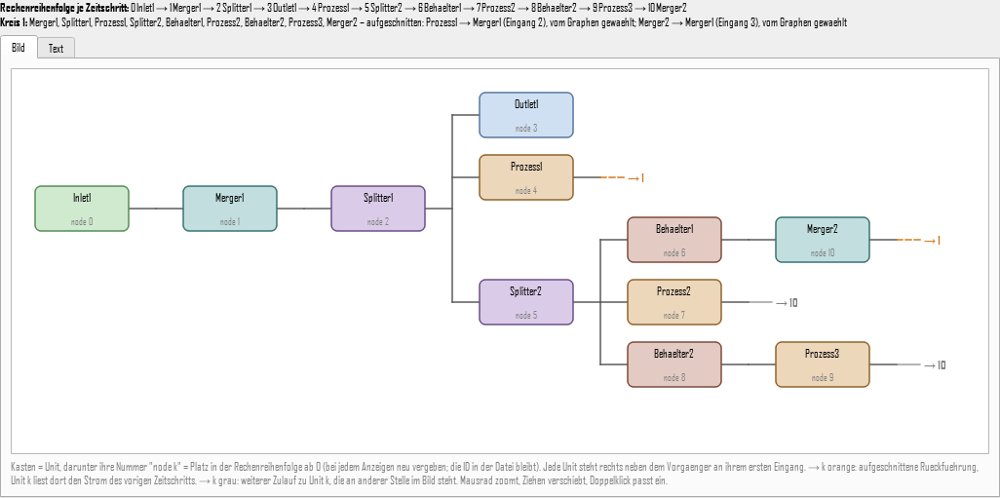
Prüfung
Start-Flowsheet: Reihenfolge Inlet, Merger, Splitter, Outlet, Prozess, ein Kreis aus Merger, Splitter und Prozess, Schnitt Prozess → Merger. Bei zwei Inlets vor einem Merger steht der Merger unter dem ersten Inlet und unter dem zweiten ein Verweis.
3.4Flowsheet als Datei
Ein Flowsheet lässt sich als Datei speichern (JSON, Format „StoSiS-Flowsheet“, Formatversion 2). Sie enthält alle Eingaben:
- Simulation: Dauer, Δt, Seed, Zahl der Läufe, Darstellung, Größenraster, Karten;
- Ausführung: ausführliches Laufzeitprotokoll (es ändert die Rechenzeit, nicht die Ergebnisse);
- Units mit ID, Typ, Name, Lage und allen Einstellungen;
- Verbindungen von Ausgang zu Eingang mit „recycle“: „manual“ (von Hand markiert), „auto“ (vom Graphen aufgeschnitten) oder „no“.
Beim Schreiben und Lesen gelten feste Regeln:
- Jeder Wert steht ausgeschrieben, auch der Standardwert; so rechnet eine Datei gleich, auch wenn sich ein Standardwert ändert.
- Rechenreihenfolge und Schnitte bestimmt der Graph beim Laden aus den Verbindungen neu. „auto“ dient nur zur Information; weicht der neue Schnitt davon ab, gibt es einen Hinweis.
- Die ID einer Unit bleibt erhalten, weil sich aus ihr der Zufallsstrom der Unit ableitet (Kapitel 8).
- Stoffe stehen nur mit Namen darin und verweisen auf die Materialdatei (Kapitel 6).
- Fehlt ein Feld, gilt der Standardwert mit Hinweis; ein unbekanntes Feld wird mit Hinweis übergangen; ein ungültiger Wert bricht das Lesen mit Ortsangabe ab. Dateien der Formatversion 1 („recycle“ als true/false) werden weiter gelesen.
Grenzen
Die Oberfläche speichert und öffnet Flowsheets; beim Öffnen wird erst in ein neues Flowsheet gelesen, bei einem Fehler bleibt das bisherige. Ohne Oberfläche aus einer Datei zu rechnen, geht nur in den Testprogrammen. Stoffwerte, Ergebnisse, Auswertung, Kartenansicht und Fensterlage stehen nicht in der Datei.
Prüfung
Ein Flowsheet mit allen Unit-Typen und Einstellungen abseits des Standards wird geschrieben, gelesen und wieder geschrieben: Beide Texte sind gleich, und bei gleichem Seed stimmen alle Ergebnisse exakt überein, im Kontinuum wie im Partikelmodus. Dateien mit anderem Format, neuerer Version, Anteilen ohne Summe 1 oder einer Verbindung zu einer unbekannten Unit werden mit Ortsangabe abgewiesen. Dieselbe Datei in Formatversion 1 ergibt beim erneuten Schreiben wieder die Datei der Version 2.
4Größenraster
Zweck
Im Kontinuum ist das Raster der Strom: Jeder Strom besteht aus Werten an den Stützstellen. Im Partikelmodus dient es nur zum Auszählen der Karten für Anzeige und Vergleich.
Verfahren
Standard ist ein geometrisches Raster, bei dem jede Stützstelle um einen festen Faktor r größer ist als die vorige (Abbildung 4.1):
di = dmin · ri, Standard 1 µm bis 1 mm mit 300 Stützstellen
Ein lineares Raster ist ebenfalls wählbar. Gespeichert wird an jeder Stützstelle die Massenstromdichte q(t, d) – eine Dichte, keine Menge je Klasse. So hängen Ergebnisse nicht von der Klassenbreite ab, und jedes Integral hat eine Bedeutung. Integriert wird auf dem geometrischen Raster mit der Trapezregel in ln d:
ṁ(t) = ∫ d · q(t, d) d(ln d) ≈ ln r · [ ½ d0q0 + d1q1 + … + ½ dnqn ]
Aus derselben Matrix folgen der Massenstrom über der Zeit, die Größenverteilung des Durchsatzes und die Gesamtmasse. Vor dem Rechnen prüft das Programm jedes Inlet gegen das Raster und meldet, wenn mehr als 0,1 % seiner Verteilung außerhalb liegen.
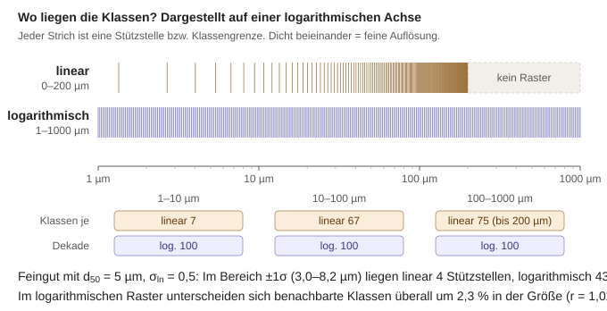
Grenzen
Im Kontinuum fehlt Material außerhalb von [dmin, dmax]. Die Auflösung ist durch die Zahl der Stützstellen begrenzt.
Prüfung
Der vom Raster erfasste Anteil trifft die exakte Verteilungssumme Q3(dmax) − Q3(dmin) für fünf Verteilungen auf 1,3 · 10−6. Die Massenbilanz über Verzögerung und Splitter geht auf 3 · 10−14 kg von 50 kg auf.
5Inlet und Größenverteilungen
Zweck
Das Inlet speist Material mit vorgegebenem Massenstrom und vorgegebener Größenverteilung in das Flowsheet ein.
Annahmen
Der Massenstrom ṁ(t) ist stückweise linear zwischen Stützpunkten und wird außerhalb konstant fortgesetzt. Die Form der Verteilung bleibt zeitlich gleich, nur ihre Höhe folgt dem Massenstrom: q(t, d) = ṁ(t) · q3(d).
Verfahren
Die Verteilung wird als Massendichte q3(d) bzw. Verteilungssumme Q3(d) angegeben – Q3(d) ist der Massenanteil aller Partikel kleiner als d.
| Verteilung | Parameter | Verteilungssumme bzw. Dichte |
|---|---|---|
| Log-Normal (Standard) | d50, σln | q3 = 1/(d σln √(2π)) · exp(−ln²(d/d50) / (2σln²)) |
| RRSB | d′, n | Q3 = 1 − exp(−(d/d′)n) |
| GGS | dmax, m | Q3 = (d/dmax)m für d ≤ dmax |
| Tabelle | Punkte (di, Q3,i) | Q3 linear in ln d zwischen den Punkten |
| Normal (nicht empfohlen) | d0, σ | Gaußsche Glockenkurve; erlaubt d < 0, daher mit Warnung |
Standard ist Log-Normal mit d50 = 100 µm und σln = 0,25: Partikelgrößen sind positiv und ihre Verteilungen meist schief. Die Tabelle nimmt gemessene Verteilungen auf, etwa aus einer Siebanalyse, ohne zwischen den Punkten eine Form dazuzuerfinden.
Im Kontinuum erhält jede Stützstelle genau die Masse, die ihr bei anteiliger Aufteilung nach der Lage zwischen den Nachbarn zusteht (Hutfunktion in ln d). Die Summe über alle Stützstellen ist damit exakt Q3(dmax) − Q3(dmin), auch wenn die Dichte springt wie bei GGS am Größtkorn. Im Partikelmodus erzeugt das Inlet Karten nach der Kartendichte (Kapitel 9.3).
Grenzen
Die Verteilung ist zeitlich konstant; eine sich ändernde Verteilung entsteht nur über mehrere Inlets und einen Merger. Die Hutfunktion glättet den Gipfel leicht – beim Standard-Inlet um höchstens 7 · 10−4 des Maximums.
Prüfung
Für alle Verteilungen gilt Q3(Quantil(p)) = p auf 10−8 relativ, und die eingespeiste Masse entspricht in jedem Zeitschritt dem Zulaufprofil.
6Stoffe, Temperatur und Druck
Zweck
Mehrere Stoffe sollen gemeinsam durch das Flowsheet laufen, und Stoffwerte wie Dichte, Wärmekapazität oder Viskosität sollen bei der jeweiligen Temperatur und dem jeweiligen Druck verfügbar sein.
Annahmen
Ein Strom trägt je Stoff eine separate Verteilung auf demselben Raster, dazu eine Temperatur und einen Druck. Einfache Units wie Splitter und Verzögerung reichen beide unverändert weiter.
Verfahren
Die Stoffwerte stehen in einer Materialdatei im JSON-Format (data/Materialien.json) mit 18 Stoffen. Jede Eigenschaft ist eine Konstante, eine Formel (ideales Gas, Sutherland, Antoine, Polynome) oder eine Tabelle über der Temperatur, jeweils mit Gültigkeitsbereich, Quelle und Prüfstatus. Gibt es mehrere Einträge, gilt zuerst einer mit Temperatur und Druck im Bereich, dann einer mit der Temperatur im Bereich, sonst der mit der nächstgelegenen Temperaturgrenze; Werte außerhalb des Bereichs oder jenseits der Messpunkte werden markiert. Die aktiven Stoffe eines Flowsheets ergeben sich aus den Inlets.
Gespeichert wird nur die Wärmekapazität cp(T); die Enthalpie folgt durch Integration, h(T) = ∫ cp dT ab 298,15 K. Laufen Ströme zusammen, gilt die Energiebilanz: Die Mischtemperatur ist die Temperatur, bei der die Enthalpie der Mischung gleich der Summe der zugeführten Enthalpien ist. Gelöst wird sie mit dem Newton-Verfahren, abgesichert durch Bisektion zwischen kältester und wärmster Eintrittstemperatur. Bei konstanter Wärmekapazität ergibt sich
TMisch = Σ ṁi cp,i Ti / Σ ṁi cp,i
Der Druck nach dem Mischen ist der kleinste Eingangsdruck eines Stroms mit Material. An einer Zusammenführung herrscht nur ein Druck, und Material strömt nur vom höheren zum niedrigeren Druck.
Grenzen
Die Werte stammen zunächst aus der Datenbank von Dyssol (Skorych, Dosta & Heinrich 2020) und sind bis zu ihrer Prüfung als ungeprüft gekennzeichnet; auffällige Einträge tragen eine Warnung. Fehlt einem Stoff die Wärmekapazität, wird die Temperatur nach der Masse gemittelt und ein Hinweis ausgegeben. Eine Gasphase als Trägermedium gibt es nicht.
Prüfung
- Sand bei 20 °C und 80 °C im Massenverhältnis 10 : 5 mischen sich zu 40,000 °C, Sand mit Harnstoff zu 48,92 °C – die geschlossene Lösung für konstante Wärmekapazität.
- Die Massenbilanz je Stoff über Merger und Splitter stimmt auf 10−15.
- Die Viskositäten von Stickstoff, Sauerstoff und Luft liegen bis 500 K innerhalb von 1 % der Referenzgleichungen von Lemmon & Jacobsen (2004).
7Units
7.1Merger
Der Merger addiert die Massenstromdichten seiner Eingänge je Stoff; Temperatur und Druck folgen aus Kapitel 6. Im Partikelmodus hängt er die Karten aller Eingänge aneinander.
7.2Splitter
Zweck
Der Splitter teilt einen Strom auf zwei oder drei Ausgänge auf, als reiner Mengenteiler: Der Anteil gilt für alle Partikelgrößen gleich.
Annahmen
Die Anteile sind fest oder schwanken zeitlich korreliert um einen Mittelwert. Der letzte Ausgang erhält jeweils den Rest.
Verfahren
Im schwankenden Modus folgt der Anteil gi jedes Ausgangs außer dem letzten einem Ornstein-Uhlenbeck-Prozess (Uhlenbeck & Ornstein 1930) mit Mittelwert μ, Streuung σ und Korrelationszeit τ:
dg = −(g − μ)/τ · dt + σ √(2/τ) dW
Der Prozess ist stationär und normalverteilt, kehrt immer zum Mittelwert zurück und hat genau eine Korrelationszeit. Fortgeschrieben wird er exakt (Gillespie 1996) statt mit dem Euler-Verfahren, sodass Mittelwert, Streuung und Zeitverhalten nicht vom Zeitschritt abhängen:
gk+1 = μ + (gk − μ) a + σ √(1 − a²) ξ, a = e−Δt/τ, ξ ~ N(0, 1)
Der Prozess startet bereits im Gleichgewicht, g(0) ~ N(μ, σ²). Anteile außerhalb von [0, 1] werden abgeschnitten; übersteigt die Summe der schwankenden Anteile 1, werden sie anteilig gekürzt. Die Masse bleibt in jedem Schritt exakt erhalten. Der Zufallsprozess läuft auch ohne Zulauf weiter, sodass die Zufallsfolge nur vom Seed abhängt. Im Partikelmodus verteilt das Konto-Verfahren die Karten (Kapitel 9.4); es setzt den Anteil nur um und fügt selbst keine Schwankung hinzu (Abbildung 7.1).
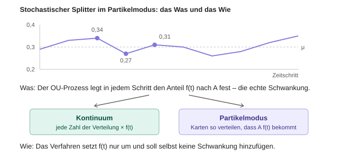
Grenzen
Bei großem σ verschiebt das Abschneiden den Mittelwert leicht; der Editor weist darauf hin, wenn μ ± 3σ außerhalb von [0, 1] liegt. Größenabhängig trennt das Sieb (Kapitel 7.5).
Prüfung
| Fall | Erwartung | Ergebnis |
|---|---|---|
| μ = 0,3, σ = 0,05, τ = 2 s, Δt = 0,1 s | Mittel 0,3, Streuung 0,05, Autokorrelation nach 2 s e−1 = 0,368 | 0,301 / 0,049 / 0,353 |
| dasselbe mit Δt = 0,5 s | gleiche Statistik | 0,301 / 0,050 / 0,368 |
| τ = 0 | keine Autokorrelation | 0,005 |
| drei Ausgänge, σ = 0,03 und 0,06 | Rest-Streuung √(0,03² + 0,06²) = 0,067 | 0,066 |
7.3Größenabhängige Verzögerung
Die Verzögerung hält Material je Größe unterschiedlich lange zurück:
tdelay(d) = tref · (d / dref)p
Ihr Hold-up ist ein Ringpuffer der letzten Eingänge; zwischen den Zeitpunkten wird linear interpoliert. Jeder Platz im Puffer merkt sich Temperatur und Druck seines Materials, und gleichzeitig ankommendes Material wird wie im Merger gemischt. Die Unit ist ein Platzhalter für Transportmodelle auf Basis von Verweilzeitverteilungen.
Im Partikelmodus hat jede Karte die Verzögerung ihrer eigenen Größe, in Zeitschritten tdelay/Δt = q + r mit ganzen Schritten q und dem Rest 0 ≤ r < 1. Vom Zulauf eines Schritts geht der Anteil 1 − r nach q Schritten, der Rest r nach q + 1, wie bei der Pfropfenströmung im Behälter (7.4). Karten werden dabei nicht geteilt: Das Konto-Verfahren schickt jede ganze Karte „früh“ oder „spät“ (Kapitel 9.4). Die Karten warten in Fächern, eines je Austrittsschritt, und tragen Temperatur und Druck ihres Eintrittsschritts mit. Reicht die Verzögerung einer Karte über das Ende der Simulation hinaus, bleibt sie als Hold-up in der Unit.
7.4Behälter
Zweck
Der Behälter hält Material zurück – ein Rührkessel, eine Wirbelschicht, ein Rohr oder ein Silo. Er glättet Schwankungen des Zulaufs und gibt dem Material eine Verweilzeitverteilung.
Annahmen
Der Ablauf folgt einer festen mittleren Verweilzeit τ, wie bei der Durchströmung mit τ = V/Q; eine Charge hat keinen Ablauf. Welches Material geht, bestimmt das Mischverhalten. Wählbar sind vier Fälle mit derselben mittleren Verweilzeit (Abbildung 7.2; Danckwerts 1953, Levenspiel 1999):
| Mischung | Wer geht | Verweilzeitverteilung |
|---|---|---|
| ideal durchmischt | jedes Material mit derselben Wahrscheinlichkeit, unabhängig von seinem Alter | exponentiell |
| Pfropfenströmung | das älteste zuerst | alles genau τ |
| Kaskade aus n Kesseln | Kessel für Kessel, je τ/n | Erlang (Gamma) |
| Kernfluss | der Anteil φ als Pfropfen in κτ durch den Kern, der Rest durchmischt durch die Randzone | früher Durchbruch, langer Ausläufer |
Die Randzone hat τR = (1 − φκ) τ / (1 − φ), damit das Mittel τ bleibt; Standard sind φ = 60 % und κ = 0,3. Bei t = 0 ist der Behälter leer, wie im Dauerbetrieb gefüllt (Zulauf bei t = 0 mal τ, mit dessen Größenverteilung) oder mit vorgegebener Masse, Stoff und Größenverteilung gefüllt.
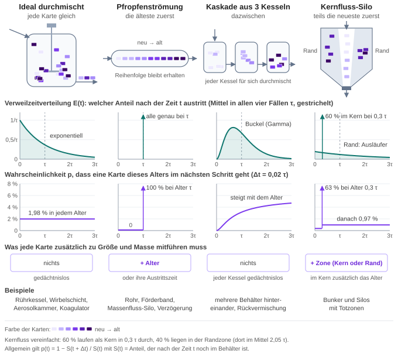
Verfahren
Jeder Schritt bringt den Zulauf mal Δt in den Behälter; der Ausgang zeigt, was während des Schritts austritt, geteilt durch Δt. Die Schrittformeln sind exakt für einen im Schritt konstanten Zulauf. Im ideal durchmischten Behälter nimmt der Inhalt nach dH/dt = −H/τ ab; je Schritt geht vom Inhalt und vom Zulauf desselben Schritts der Anteil
a = 1 − e−Δt/τ, b = 1 − (τ/Δt) a ≈ Δt/(2τ)
Bei der Pfropfenströmung tritt ein Zulaufschritt nach τ aus; ist τ/Δt = q + r nicht ganzzahlig, geht der Anteil 1 − r nach q Schritten, der Rest nach q + 1. In der Kaskade gelangt Material aus einem Kessel in einem Schritt mit der Poisson-Wahrscheinlichkeit Pm (λ = nΔt/τ) um m Kessel weiter, aus dem Zulauf mit Qm = P(X > m)/λ; was über den letzten Kessel hinauskäme, geht. Der Kernfluss verbindet einen Pfropfen- und einen ideal durchmischten Teil. Temperatur und Druck folgen je Bereich aus der Energiebilanz wie im Merger.
Im Partikelmodus gehen ganze Karten. Welche, entscheidet das Konto-Verfahren mit den Konten „geht“ und „bleibt“ (Kapitel 9.4): Jede Karte geht unabhängig von Gewicht und Alter mit derselben Wahrscheinlichkeit, und jede Größengegend verliert ihren Anteil. Eine Karte merkt sich nur, wo sie liegt – im Inhalt, in einem Kessel oder im Schritt, in dem sie austritt. Im Dauerbetrieb liegen nach Little (1961) N τ/Δt Karten im Behälter. Der Vorrat wächst deshalb mit τ/Δt: Er fasst (τ/Δt + 2) Zulaufschritte mit je höchstens 2 N Karten (Obergrenze der Stromscheibe), mindestens das Eingestellte × N und höchstens 10 Millionen Karten. Erst darüber werden neu hinzukommende Karten paarweise zusammengelegt wie bei den Grenzen je Stromscheibe (Kapitel 9.5). Beispiel: Ein Kessel mit τ = 641 s bei Δt = 0,5 s und 2000 Karten je Schritt fasst rund 5,1 Millionen Karten.
Grenzen
Die Verweilzeit ist fest. Ein geregelter Füllstand, ein vorgegebener Austrag (Dosierschnecke) und ein größenabhängiger Austrag sind nicht enthalten. Als Ergebnis erscheint nur der Ablauf, nicht der Inhalt; das betrifft vor allem die Charge. Ist der Vorrat voll, trägt der Ablauf weniger, schwerere Karten und streut stärker.
Prüfung
| Fall | Erwartung | Ergebnis |
|---|---|---|
| Konstanter Zulauf in den leeren Behälter, alle vier Mischungen | Ablauf je Schritt = Mittel der geschlossenen Summenkurve über den Schritt | Kontinuum auf 6 · 10−14; Partikelmodus (400 Karten je Schritt) höchstens 3,7 Karten je Schritt, aufsummiert 8 |
| Puls | mittlere Verweilzeit τ | Kontinuum exakt; Partikelmodus mit gleich schweren Karten auf 0,4 % |
| Massenbilanz; Füllung wie im Dauerbetrieb; Auswaschen eines anderen Stoffs | exakt; Ablauf = Zulauf ab dem ersten Schritt, N τ/Δt Karten im Vorrat; Abnahme nach (1 − a)k | erfüllt, in beiden Darstellungen |
| Vorrat nach τ/Δt (τ/Δt = 100, N = 100) | Platz für (τ/Δt + 2) × 2 N = 20 400 Karten, nichts zusammengelegt | erfüllt; 10 000 Karten im Vorrat |
| Vorrat voll (τ/Δt = 100, Vorrat auf 10 × N Karten begrenzt) | Ablauf = Zulauf | Zulauf rund 10 : 1 zusammengelegt, Ablauf im Mittel 0,36 % daneben |
| Schwankender Splitter davor (σ = 0,05, τOU = 2 s, τ = 10 s) | Streuung des Ablaufs nach der Schrittformel | 1000 Läufe: 0,8 % daneben; Partikelmodus folgt dem Kontinuum auf höchstens 1,1 % je Schritt |
| Pfropfenströmung, τ/Δt = 50,5, je Größe eine schwere und eine leichte Karte (10 : 1) | Ablauf = Zulauf | höchstens 9,7 % je Schritt; ohne neues Auslosen 82 % in jedem zweiten Schritt |
| Schwankender Zulauf (σ/μ = 0,167, τOU = 2 s) direkt in den durchmischten Behälter, 400 Karten je Schritt | Soll a · Inhalt/Δt + b · Zulauf | Streuung 0,94 % um das Soll, im Mittel 0,05 % daneben |
7.5Sieb
Zweck
Das Sieb teilt den Zulauf nach der Partikelgröße in Grobgut (Ausgang 1) und Feingut (Ausgang 2). Dieselbe Unit beschreibt jeden Klassierer, dessen Trennung sich durch eine Trennkurve fassen lässt, etwa einen Sichter. Ein Mehrdecksieb sind mehrere Siebe hintereinander, je Deck eines.
Annahmen
Getrennt wird nur nach der Größe, für alle Stoffe gleich. Der Trenngrad T(d) ist der Massenanteil der Partikel der Größe d, der ins Grobgut geht; er ist zeitlich fest und hängt nicht von der Beladung ab. Das Sieb hält nichts zurück, Temperatur und Druck bleiben. Wählbar sind die drei Trennkurven von Dyssol (Skorych et al. 2020) mit der Trenngröße xcut und der Trennschärfe α; mit x = d/xcut:
| Modell | Trenngrad T(d) | T(xcut) |
|---|---|---|
| Plitt (1971) | 1 − exp(−0,693 xα) | 0,49997 |
| Molerus-Hoffmann (1969) | 1 / (1 + x−2 exp(α (1 − x²))) | 0,5 |
| Teipel-Hennig (Hennig und Teipel 2016) | (1 − (1 + 3 x(x + α) β)−1/2) (1 − o) + o | 0,5 (1 − o) + o |
Je größer α, desto steiler die Kurve. β ist eine zweite Trennschärfe; der Offset o ist der Anteil, der unabhängig von der Größe ins Grobgut gelangt, etwa Feingut, das am Grobkorn haftet. Das Wahrscheinlichkeitsmodell von Dyssol (Normalverteilung über die Klassen) ist nicht enthalten, weil es vom Größenraster abhängt.
Verfahren
Im Kontinuum wird an jeder Stützstelle und für jeden Stoff der Zulauf mit T(d) ins Grobgut und mit 1 − T(d) ins Feingut gegeben; die Masse bleibt exakt erhalten. Im Partikelmodus gehen ganze Karten nach dem Konto-Verfahren (Kapitel 9.4), wobei jede Karte ihren eigenen Trenngrad mitbringt. Karten mit T = 0 oder T = 1 gehen ohne Konto ins Feingut bzw. Grobgut.
Grenzen
Die Trennkurve hängt nicht vom Durchsatz, von der Siebfläche oder der Feuchte ab; Überladung und Siebgutverweilzeit sind nicht abgebildet. Nach Dichte oder Stoff trennt das Sieb nicht. Eine Karte trägt eine Größe; ein Gemisch verschiedener Größen in einer Karte, etwa nach einer Agglomeration, wird als Ganzes nach dieser Größe getrennt.
Prüfung
| Fall | Erwartung | Ergebnis |
|---|---|---|
| Alle drei Modelle mit den Standardwerten von Dyssol (xcut = 2 mm, α = 8, β = 0,5, o = 0,2), 10 µm bis 10 mm | dieselben Werte wie die Formeln in Dyssol; T steigt mit d | höchstens 6 · 10−17 daneben; erfüllt |
| Kontinuum, zwei Stoffe, Molerus-Hoffmann | Grobgut = T(d) · Zulauf, Grobgut + Feingut = Zulauf | exakt bzw. auf 10−15 |
| Partikelmodus, zwei Stoffe mit je 2000 Karten um xcut = 100 µm, Plitt mit α = 3, 1000 Schritte | Grobgut 0,56962 des Zulaufs; jeder Stoff und Größenbereich mit seinem T(d) | 0,56982; je Stoff und Bereich höchstens 1,7 · 10−3 daneben; Kartenzahl und Masse in jedem Schritt erhalten |
| Konten im selben Fall | höchstens ein halber Kartenanteil (2,0 · 10−4) | 1,9 · 10−4 |
| Karten mit T = 0 und T = 1, 200 Schritte | immer ins Feingut bzw. Grobgut | erfüllt |
7.6Outlet
Das Outlet nimmt den ankommenden Strom auf und zeichnet ihn auf.
8Zufallszahlen und mehrere Läufe
Zweck
Gleicher Seed soll auf jedem System dasselbe Ergebnis liefern, und Units sollen voneinander unabhängige Zufallszahlen erhalten. Aus vielen Läufen entsteht die Statistik eines Ergebnisses.
Verfahren
- Generator: Mersenne Twister mt19937_64 (Matsumoto & Nishimura 1998); Gleichverteilung aus den oberen 53 Bit; Normalverteilung mit der Polarmethode (Marsaglia & Bray 1964). Die Normalverteilung der C++-Standardbibliothek wird nicht verwendet, weil ihr Verfahren je nach Bibliothek verschieden ist.
- Seed je Unit: SeedUnit = SplitMix64(Seed ⊕ SplitMix64(FNV-1a(Knoten-ID))), mit SplitMix64 nach Steele, Lea & Flood (2014). Die Zufallsfolge einer Unit hängt damit nur vom globalen Seed und ihrer Kennung ab, nicht von der Zeichenreihenfolge, und zwei Units schwanken nicht im Gleichtakt.
- Läufe: Lauf 1 nutzt den eingestellten Seed, weitere Läufe abgeleitete Seeds. Standard sind 20 Läufe.
- Statistik: Mittelwert und Varianz je Zelle werden mit dem Welford-Verfahren (Welford 1962) in einem Durchgang fortgeschrieben, numerisch stabil und mit Bessel-Korrektur. Volle Matrizen gibt es für Lauf 1, den Mittelwert und die Standardabweichung; für jeden Lauf werden zusätzlich Massenstrom über der Zeit, Größenverteilung und Gesamtmasse gespeichert.
- Darstellung: Mittelwert mit Band ±1σ, ±2σ oder dem 5–95-%-Perzentil (lineare Interpolation, Typ 7 nach Hyndman & Fan 1996), auf Wunsch mit den Einzelläufen. Die Randverteilungen der Streuungs-Heatmap werden aus den Einzelläufen berechnet, nicht durch Integration der Streuungsmatrix, weil die Größenklassen miteinander korreliert sind.
Grenzen
Die Unsicherheit eines Mittelwerts sinkt mit 1/√N: Hundertmal mehr Läufe machen ihn nur zehnmal genauer. Perzentile sind erst ab etwa 20 Läufen aussagekräftig.
Prüfung
Für einen Splitter hinter einem konstanten Zulauf ṁ lässt sich die Streuung der Masse M, die in der Zeit T einen Ausgang erreicht, geschlossen angeben:
E[M] = μ ṁ T, Var[M] = 2 ṁ² σ² τ ( T − τ (1 − e−T/τ) )
Mit ṁ = 10 kg/s, μ = 0,3, σ = 0,05, τ = 2 s und T = 40 s erwartet man 120,000 kg ± 6,164 kg; 2000 Läufe ergeben 120,058 kg ± 6,094 kg. Die Abweichung der Streuung von −1,1 % liegt innerhalb der statistischen Unsicherheit von 1,6 %. Der Fehler fällt mit der Zahl der Läufe wie 1/√N (Abbildung 8.1).
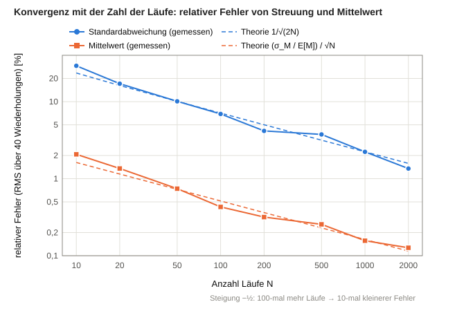
9Partikelmodus: Karten
9.1Karten sind Monte-Carlo-Partikel
Im Partikelmodus besteht ein Strom aus Karten. Eine Karte ist ein gewichtetes Monte-Carlo-Partikel, in der Literatur auch gewichtetes Simulationspartikel genannt (Zhao, Kruis & Zheng 2009; Kotalczyk & Kruis 2017): ein Rechenpartikel, das eine Gruppe gleicher echter Partikel vertritt. „Karte“ und „Monte-Carlo-Partikel“ bezeichnen in diesem Handbuch dasselbe.
Eine Karte ist ein Paket gleicher Partikel aus einem Zeitschritt Δt. Sie trägt eine Größe d und eine Masse mk je Stoff k: die Masse, die der Strom in diesem Zeitschritt in dem Paket mitführt. Raten entstehen erst dort, wo ein Fluss gebraucht wird (Ergebnisse, Diagramme, Kontinuum): Massenstrom ṁk = mk / Δt. Ihr Gewicht w – die Zahl der echten Partikel, die sie vertritt – folgt für kompakte Kugeln aus Masse und Größe:
w = Σk (mk / ρk) / (π d³ / 6)
Das Prinzip ist das einer Umfrage, in der wenige Befragte mit ihren Merkmalen für viele Menschen stehen: Einige tausend Karten je Zeitschritt beschreiben einen Strom aus Milliarden Partikeln. Wo viel Material ist, liegen viele Karten; Größenbereiche ohne Material kosten nichts.
Partikel statt Raster lohnen sich, wenn ein Partikel mehrere Eigenschaften trägt, etwa Größe, Porosität und fraktale Dimension. Im Kontinuum braucht jede Eigenschaft eine Achse des Rasters, und jede Zelle speichert eine Zahl, ob dort Material liegt oder nicht. Eine Karte speichert nur ihre Eigenschaften und ihr Gewicht. Mit M Klassen je Achse, n Eigenschaften und N Karten ergibt sich:
Raster: Mn Zahlen Karten: N · (n + 1) Zahlen
Das Raster wächst exponentiell mit der Zahl der Eigenschaften, die Karten wachsen linear (Abbildung 9.1). Bei 32 Klassen je Achse und 2000 Karten:
| Eigenschaften n | Raster Mn | Karten N · (n + 1) |
|---|---|---|
| 1 | 32 | 4000 |
| 3 | 32 768 | 8000 |
| 5 | 3,4 · 107 | 12 000 |
Im Raster belegen auch leere Zellen Speicher: In der Beispielverteilung mit drei Eigenschaften liegen 99 % der Masse in 1017 der 32 768 Zellen (3,1 %). Karten liegen nur dort, wo Material ist, und tragen exakte Werte statt Klassen. Für eine einzige Eigenschaft ist das Raster dagegen kleiner und rauschfrei; die Grenze liegt in diesem Beispiel bei n ≈ 2,6. Das passt zur Schätzung von Shima et al. (2009) für Wolkentropfen, nach der Rechenpartikel ab etwa zwei bis vier Eigenschaften weniger Rechenzeit brauchen als ein Raster. Der Preis der Karten ist ein statistisches Rauschen, wo Karten zufällig gezogen oder verteilt werden; es fällt mit 1/√N.

Für Prozesse wie die Koagulation, bei denen Paare von Partikeln zählen, wächst der Unterschied noch weiter (Abbildung 9.2). Ein Raster koppelt jede Zelle mit jeder, also (Mn)² Zellpaare je Zeitschritt; bei 32 Klassen und drei Eigenschaften sind das 1,1 · 109. Ein Monte-Carlo-Verfahren durchsucht dagegen nicht alle Paare: Es lost Partner aus und nimmt ein Paar mit einer Wahrscheinlichkeit proportional zum Koagulationskern an (Akzeptanz-Verwerfung; Kruis, Maisels & Fissan 2000). Bei einem zeitgesteuerten Verfahren ist das etwa ein Versuch je Karte und Zeitschritt, also größenordnungsmäßig N Paare, unabhängig von der Zahl der Eigenschaften; selbst alle N² Kartenpaare blieben bei 4 · 106. Würde das Raster nur die belegten Zellen paaren, wären es bei drei Eigenschaften immer noch 1017² ≈ 106 Paare, rund das 500-Fache der ausgelosten Kartenpaare.

Die Bausteine gewichteter Monte-Carlo-Verfahren finden sich im Partikelmodus wieder:
| Gewichtetes Monte-Carlo-Verfahren | Partikelmodus |
|---|---|
| Simulationspartikel | Karte |
| Eigenschaften: Größe, Zusammensetzung | Größe d, Massenstrom ṁk je Stoff |
| Gewicht: Zahl der vertretenen echten Partikel | Gewicht w |
| Zahl der Simulationspartikel | Karten je Zeitschritt und Inlet, N |
| Verteilung der Simulationspartikel über der Größe, etwa über Gewichtsfunktionen (DeVille, Riemer & West 2011) | Kartendichte (Kapitel 9.3) |
| Teilen und Zusammenlegen von Simulationspartikeln (Zhao, Kruis & Zheng 2009; Kotalczyk & Kruis 2017) | Grenzen je Stromscheibe (Kapitel 9.5) |
| Ereignisse zwischen Simulationspartikeln, etwa Koagulation | nicht enthalten (Kapitel 1); Größe, Zusammensetzung und Gewicht liegen auf jeder Karte vor |
„Monte Carlo“ beschreibt das Verfahren: Zufallszahlen entscheiden, was mit den Partikeln geschieht. Im Partikelmodus sind das der schwankende Teilungsanteil eines Splitters, die zufälligen Startpositionen des Konto-Verfahrens in Splitter und Behälter und das Auslosen der gehenden Karten in den Fächern des Behälters (Kapitel 9.4); viele Läufe ergeben die Statistik (Kapitel 8). Am Inlet entstehen die Karten dagegen ohne Zufall, eine in der Mitte jedes Streifens gleicher Fläche unter der Kartendichte (Kapitel 9.3), und sind damit rauschfrei. In einer Dimension ist das die Punktmenge mit der kleinsten Diskrepanz, wie sie Quasi-Monte-Carlo-Verfahren nutzen; für die Koagulationsgleichung ordnen Lécot & Wagner (2004) die Partikel ebenfalls nach der Masse und verwenden Folgen geringer Diskrepanz statt Zufallszahlen.
Die Darstellung gilt für die ganze Simulation, vom Inlet bis zum Outlet. Eine Simulation im Partikelmodus startet nur, wenn alle Units des Flowsheets Karten verarbeiten können. Die Zahl der Karten je Zeitschritt und Inlet, N, ist einstellbar (Standard 2000); sie bestimmt, wie genau ein Lauf die Verteilung wiedergibt.
9.2Der Begriff „Karte“
Der Name stammt vom Bild eines Karteikastens (Abbildung 9.3). Das Kontinuum gleicht einem Setzkasten mit einem festen Fach je Größe und Stoff, in dem nur steht, wie viel Masse darin liegt. Im Partikelmodus tritt an seine Stelle ein Karteikasten: eine Karte je Rechenpartikel, auf der Größe, Masse je Stoff und Gewicht stehen. Eine weitere Eigenschaft ist eine weitere Zeile, und Karten gibt es nur für das, was tatsächlich vorkommt.
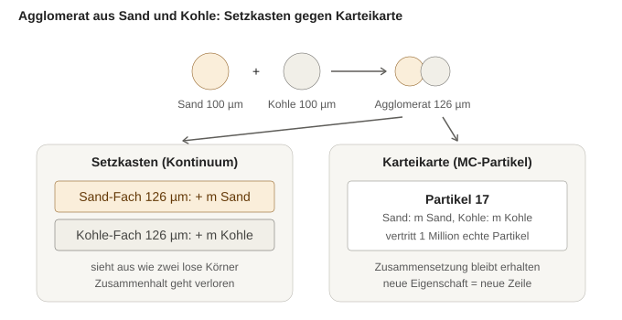
Ein eigener Name neben „Monte-Carlo-Partikel“ hat drei Gründe:
- Eindeutig neben „Partikel“: „Eine Karte vertritt eine Million Partikel“ statt „ein Partikel vertritt eine Million Partikel“; ebenso sind Kartendichte, Kartenzahl und Masse je Karte eindeutig, während Partikeldichte, Partikelzahl und Partikelmasse die echten Körner bezeichnen.
- Name der Darstellung, nicht des Verfahrens: Eine Karte bleibt eine Karte, ob sie zufällig oder nach fester Regel behandelt wird.
- Kurz und zusammensetzbar: Das gewichtete Rechenpartikel heißt je nach Fachgebiet weighted simulation particle (Zhao, Kruis & Zheng 2009), parcel (Dukowicz 1980) oder super-droplet (Shima et al. 2009); „Karte“ ist ein kurzer deutscher Name dafür.
9.3Kartendichte und Karten am Inlet
Zweck
Die Karten sollen über der Größe so verteilt sein, dass sowohl massenbezogene Ergebnisse (Massenstrom, d50) als auch anzahlbezogene (Feingut, Partikelzahl) eine brauchbare Statistik haben.
Verfahren
Die Kartendichte c über ln d ist ein Mittel aus der Massendichte q3* und der Anzahldichte q0* (beide je ln d, Fläche 1), abgeflacht mit dem Exponenten γ:
c(d) ∝ M(q3*, q0*)γ
| Regel | Mittel M | Eigenschaft |
|---|---|---|
| Summe (Standard) | (1 − f) q3* + f q0* | ohne Abflachung trägt keine Karte mehr als 1/(1 − f)-mal die mittlere Masse und 1/f-mal die mittlere Partikelzahl |
| Quadratisch | ((1 − f) q3*² + f q0*²)1/2 | folgt stärker dem jeweils Größeren; Schranken 1 + √(f/(1 − f)) und 1 + √((1 − f)/f) |
| Produkt | q3*1 − f · q0*f | ein Buckel zwischen Masse und Anzahl, dünne Ränder, keine Schranke |
Der Anteil f gewichtet die Anzahl (0 = nur Masse, 1 = nur Anzahl); γ = 1 bedeutet keine Abflachung, kleinere Werte geben beiden Rändern mehr Karten; die Oberfläche zeigt die Wirkung als Vorschau (Abbildung 9.5). Standard ist die Summe mit f = 0,5 und γ = 0,8. Die Summe ist eine defensive Mischung im Sinne von Hesterberg (1995): Weil Masse und Anzahl je mit festem Anteil beitragen, bleibt das Gewicht jeder Karte beschränkt. Alle drei Mittel sind homogen vom Grad 1, sodass Teilen und Zusammenlegen von Karten konsistent bleiben.
Am Inlet wird die Fläche unter der Kartendichte in N gleiche Streifen geteilt (Abbildung 9.4). In jeden Streifen kommt eine Karte, platziert in seiner Mitte; ihre Masse ist die Masse des Streifens, exakt aus Q3. Größen und Massenanteile stehen damit einmal fest, jeder Zeitschritt skaliert sie mit dem aktuellen Massenstrom – ohne Zufall, in jedem Schritt gleich.
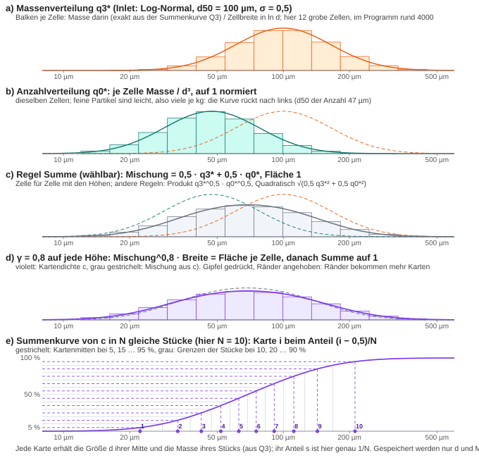
Partikel unter der kleinsten Stützstelle des Rasters, dmin, zählen für die Kartendichte so, als hätten sie die Größe dmin. Das Raster löst darunter nicht auf, und bei Verteilungen, deren Partikelzahl zu kleinen Größen ohne Grenze wächst (etwa RRSB mit n < 3), bliebe die Anzahl sonst unbegrenzt.

Grenzen
Das Rauschen einer Größenregion sinkt mit der Wurzel der Karten, die dort liegen. Als Kennzahl dienen die beiden Ränder: die feinsten 5 % der Partikel und die gröbsten 5 % der Masse. Bekommt ein Rand weniger als 10 Karten je Zeitschritt, meldet das Inlet das zusammen mit Abhilfen, die bei den aktuellen Einstellungen noch möglich sind. Bei Verteilungen mit vielen sehr feinen Partikeln liegt ein Teil der Karten unter dmin.
Prüfung
Die Platzierung stimmt mit einer unabhängigen Rechnung überein; bei der Summe ohne Abflachung bleiben Masse und Partikelzahl je Karte unter den Schranken. Am Inlet trägt jede Karte im Inneren auf 0,1 % genau den Anteil 1/N an der Kartendichte.
9.4Konto-Verfahren
Splitter, Behälter, Verzögerung und Sieb verteilen ganze Karten auf ihre Ziele, ohne sie zu kopieren oder je Karte zu würfeln (Abbildung 9.6). Die Karten eines Schritts werden nach Stoff und darin nach Größe geordnet und ab einer zufälligen Startposition einmal ringsum durchgegangen. Jede Karte zahlt auf das Konto jedes Ziels ein und geht ganz dorthin, wo am meisten steht; dieses Konto wird belastet. Die Konten laufen über die Schritte weiter, ihre Summe bleibt null. Die Ordnung nach Stoff sorgt dafür, dass jeder Stoff für sich im richtigen Verhältnis geteilt wird. In der Statistik heißt diese Auswahl systematische Stichprobe: gleiche Chance für jede Karte wie beim Würfeln, aber ohne dessen Streuung in der Zahl.
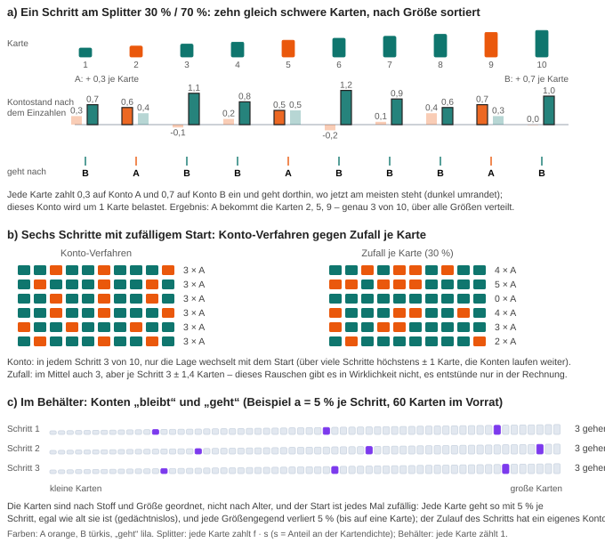
Splitter
Jede Karte zahlt fi · s auf das Konto jedes Ausgangs i ein; das gewählte Konto wird um s belastet. Dabei ist s der Anteil der Karte an der Kartendichte der Stromscheibe, berechnet mit derselben Regel wie am Inlet; die Anteile einer Scheibe ergeben zusammen 1. So geht von benachbarten Karten jede (1/f)-te in einen Ausgang mit dem Anteil f – für leichte Karten genauso wie für schwere, nach Anzahl wie nach Masse. Die Startposition stammt aus einem separaten Zufallsstrom; der Verlauf des schwankenden Anteils ist deshalb bei gleichem Seed im Kontinuum und im Partikelmodus derselbe.
Die Masse je Ausgang weicht je Schritt um etwa eine Karte vom Soll ab und bleibt über viele Schritte in der Größenordnung von 10−5 des Durchsatzes. Nachskaliert wird nicht: Ein Faktor je Ausgang wäre ein Verhältnis aus Zufallsgrößen und verzerrt Ausgänge mit wenigen Karten.
Behälter
Die Konten heißen „geht“ und „bleibt“: Jede Karte zahlt a bzw. 1 − a ein (Kapitel 7.4), und das gewählte Konto wird um eine ganze Karte belastet. So hat jede Karte unabhängig von ihrem Gewicht dieselbe Austrittswahrscheinlichkeit; mit Anteilen an der Kartendichte gingen schwere Karten zwischen leichten seltener. Die Karten jedes Bereichs liegen in Fächern je Stoff und Größenklasse (100 Klassen je Dekade), innerhalb eines Fachs ungeordnet. Den Gang des Kontos über alle n Karten ab einer zufälligen Startkarte rechnet StoSiS in einem Sprung: Mit g = Konto „geht“ − ½ geht die k-te Karte an der Stelle jk = ⌊(k − 1 − g)/a⌋ + 1, also jede (1/a)-te; danach ist g um n a minus die Zahl der gegangenen Karten gewachsen, genau wie nach dem Gang Karte für Karte. Die Stellen ergeben, wie viele Karten jedes Fach verlassen; welche, wird im Fach ausgelost, damit der Austritt weder vom Alter noch vom Gewicht abhängt. Ein Schritt berührt so nur die gehenden Karten, nicht den ganzen Vorrat. In der Kaskade zieht jeder Kessel nacheinander je Ziel, zuerst den Austritt, dann einen Kessel weiter und so fort, jeweils mit dem Anteil am Rest; so stimmt jedes Ziel auf eine Karte. Der Zulauf eines Schritts hat ein eigenes Konto mit dem Anteil b.
Würfeln je Karte gäbe im Mittel dasselbe, streute aber mit der Zahl der Karten statt mit der Zahl der echten Partikel. Im Standardfall (2000 Karten je Schritt, τ = 10 s, Δt = 0,2 s) schwankte der Ablauf so um 2,2 % je Schritt, mit dem Konto-Verfahren bei gleich schweren Karten um 0,05 %; die echten Partikel – rund 109 je Schritt – schwanken um 0,003 %.
Verzögerung
Die Konten heißen „früh“ und „spät“ (Kapitel 7.3). Jede Karte zahlt 1 − r bzw. r ein, wobei r der Rest ihrer eigenen Verzögerung ist, und das gewählte Konto wird um eine ganze Karte belastet. Beide Konten gelten für alle Karten; wie viele Schritte „früh“ und „spät“ bedeuten, steht in der Karte. Weil die beiden Konten zusammen null ergeben, genügt ein Kontostand l für „spät“: Eine Karte geht „spät“, wenn nach ihrer Einzahlung l > ½ gilt. Damit ist die Zahl der „späten“ Karten unter den ersten i genau die gerundete Summe der Reste, Li = ⌈l0 + r1 + … + ri − ½⌉.
Im Ausgang eines Schritts treffen Karten verschiedener Größe aus verschiedenen Eintrittsschritten zusammen. Jede Gruppe gleicher ganzer Verzögerung q ist nur innerhalb ihres Eintrittsschritts ausgeglichen; je Ausgangsschritt weicht deshalb jede Gruppe um etwa eine Karte ab, nicht der ganze Strom. Im Standardfall (2000 Karten, etwa 25 Gruppen) liegt der Ablauf je Schritt bis zu 0,5 % neben dem Kontinuum, ohne systematischen Fehler; die Masse bleibt exakt erhalten.
Sieb
Die Konten heißen „Grobgut“ und „Feingut“ (Kapitel 7.5). Jede Karte zahlt T(d) · s bzw. (1 − T(d)) · s mit ihrer eigenen Größe d ein, s wie beim Splitter. Weil T von der Größe abhängt, gibt es ein Kontenpaar je Stoff und Größenbereich (Faktor 2, wie die Bereiche der Kartenansicht): Ein Kontostand wandert so nie in einen anderen Bereich oder Stoff, und innerhalb eines Bereichs, in dem sich T wenig ändert, geht jede (1/T)-te Karte ins Grobgut. Ein Kontostand bleibt unter einem halben Kartenanteil. Karten mit T = 0 oder 1 berühren kein Konto.
Grenzen
Sind die Karten verschieden schwer, etwa bei schwankendem Zulauf, streut der Ablauf eines Behälters etwa wie bei zufälliger Auswahl der Karten (0,83 % bei σ/μ = 0,167 und 400 Karten je Schritt). Ein einzelner Puls aus N verschieden schweren Karten zeigt in der nach Masse gewichteten Verweilzeit ein Rauschen von etwa σT · CV / √N; im laufenden Betrieb mittelt es sich über die Karten im Vorrat.
9.5Grenzen je Stromscheibe
Hinter Mergern, Splittern und Rückführungen ändert sich die Kartenzahl: Ein Kreis mit dem Rücklaufanteil R vervielfacht sie um 1/(1 − R), ein kleiner Splitteranteil verdünnt sie. Deshalb gelten an jedem Ausgang einer Unit zwei Grenzen, gemessen am Anteil jeder Karte an der Kartendichte:
- Höchstens 2N Karten je Stromscheibe. Sind es mehr, werden benachbarte Karten desselben Stoffs paarweise zusammengelegt, die leichtesten Paare zuerst; ein Paar darf zusammen höchstens 5/N tragen. Masse und Partikelzahl bleiben erhalten, die neue Größe folgt aus d³ = (m1 + m2) / (m1/d1³ + m2/d2³).
- Keine Karte über 5/N. Eine schwerere Karte wird in gleiche Stücke gleicher Größe geteilt; die Verteilung ändert sich dadurch nicht.
Inlets sind ausgenommen, ihre Karten folgen bereits der Kartendichte.
Prüfung: 20 000 Karten aus zehn Scheiben werden zu 4000 zusammengelegt, d10, d50 und d90 verschieben sich um höchstens 0,014 %; eine Rückführung mit R = 0,9 hält höchstens 4000 Karten im Kreis; das Teilen ändert das Ergebnis auf dem Raster um 5,5 · 10−16.
9.6Umrechnung auf das Raster
Für Kurven, Heatmap und Auswertung werden die Karten auf das Größenraster umgerechnet: Jede Karte gibt ihre Masse anteilig an die beiden benachbarten Stützstellen ab, linear nach ihrer Lage in ln d (cloud-in-cell). Masse und mittleres ln d bleiben dabei exakt erhalten. Eine Kartenansicht zeigt außerdem die Verteilungen direkt aus den Karten – Dichte, Summenkurve, Karten je Klasse und den Verlauf über der Zeit – neben dem Mittel aller Läufe.
9.7Prüfung des Partikelmodus
- Inlet → Outlet: Der Massenstrom am Outlet entspricht in jedem Schritt dem Zulaufprofil (relativ 10−12), die Verteilungssumme weicht um weniger als 0,2 % des Massenstroms vom Kontinuum ab.
- Zwei Inlets → Merger → schwankender Splitter: Bei gleichem Seed liegen die Outlet-Massenströme je Schritt höchstens etwa eine Karte neben dem Kontinuum; jeder Stoff kommt vollständig an.
- Sehr ungleich schwere Karten (Splitter 70/30): Die feinsten 5 % der Partikel gehen zu 69,97 % der Karten und 69,92 % der Masse in den 70-%-Ausgang, und kein Ausgang bleibt in einem Schritt ohne feine Karte.
- Dosierwaage (Kapitel 11): Mittelwert und Streuung im Partikelmodus wie im Kontinuum.
- Behälter (Kapitel 7.4): alle vier Mischungen gegen ihre geschlossene Verweilzeitverteilung, Massenbilanz exakt, Vorrat nach Little, Losnummer bei gleich großen, verschieden schweren Karten und schwankendem Zulauf.
- Verzögerung (Kapitel 7.3): Bei gleicher Verzögerung 2,3 Δt für alle Karten kommen nach 2 Schritten 70 % des Zulaufs an, danach je Schritt der ganze Zulauf; die Kartenzahl bleibt (± 2). Ein Puls aus 2000 Karten mit größenabhängiger Verzögerung kommt vollständig an, jede Karte nach q oder q + 1 Schritten; die mittlere Ankunft trifft die mittlere Verzögerung (10,3173 gegen 10,3174 Schritte), und in jedem Fünftel der Größen gehen so viele Karten „spät“, wie die Reste zusammen ergeben (höchstens 0,95 Karten daneben). Im Flowsheet gilt Zulauf = Ablauf + Inhalt auf 10−15; mit der Verzögerung in einer Rückführung (Splitter 70/30) liegt der Outlet stationär höchstens 0,63 % neben dem Kontinuum, und der Merger bleibt unter 2N Karten.
10Auswertung
Kurven zeigen Massenstrom, Temperatur und Druck über der Zeit oder die Verteilung über der Größe, jeweils mit Streuband über die Läufe. Die Heatmap zeigt die Massenstromdichte über Zeit und Größe mit beiden Randverteilungen; umschaltbar sind Lauf 1, Mittelwert und Standardabweichung.
Das Fenster „Auswertung“ bereitet den Massenstrom eines Ausgangs so auf, wie man eine Messung auswertet (nach Engisch & Muzzio 2012):
- Mittel über Zeitfenster, etwa 1 s wie bei einer Waage; die Einschwingzeit lässt sich ausschließen.
- Ausreißerfilter: erst Sollwert ± x %, dann wiederholt ± kσ, bis sich nichts mehr ändert.
- Kennzahlen: Mittelwert, Standardabweichung, relative Standardabweichung, Schiefe und die Korrelation benachbarter Werte.
- Dichte-Histogramm mit Band über alle Läufe, Wahrscheinlichkeitsnetz und Zeitverlauf; Export als CSV.
Angeboten werden nur Ströme, die von einer Unit mit Zufall abhängen. Bei einem deterministischen Strom würde der zeitliche Verlauf sonst als scheinbare Streuung erscheinen. Ein Laufzeitprotokoll hält fest, welche Unit wann wie lange gerechnet hat.

11Prüfung und Validierung
11.1Prüfebenen
Geprüft wird auf drei Ebenen.
- Verifikation: Rechnet das Programm, was das Modell sagt? Dazu dienen analytische Lösungen, Bilanzen und das Konvergenzverhalten mit 1/√N.
- Vergleich mit anderen Programmen wie Dyssol oder PharmaPy: gleiche Modelle, gleiche Ergebnisse?
- Validierung: Trifft das Modell die Wirklichkeit? Das zeigt nur ein Experiment.
Die Prüfungen der Verifikation liegen als 17 Testprogramme im Repository und laufen mit einem Befehl (CTest). Stochastische Tests laufen mit festem Seed; ihre Toleranzen folgen aus dem statistischen Fehler und sind nicht frei gewählt. Ein Regressionstest überwacht Kennzahlen fester Flowsheets. Die Flowsheets der Abschnitte 11.3 bis 11.5 liegen als Dateien in Flowsheets/Validierungs-Flowsheets und lassen sich in der Oberfläche öffnen.
Ein Vergleich mit anderen Programmen an gemeinsamen Flowsheets liegt nicht vor. Gegen Messdaten geprüft ist der schwankende Splitter (11.2); für den Mischer (11.4) dient eine Verweilzeitkurve aus der Literatur. Abschnitt 11.5 stellt mit der Trockengranulier-Linie einen Fall mit Messdaten aus der Literatur vor. Messwerte, die nur als Bild vorliegen, sind aus der Abbildung abgelesen.
11.2Dosierwaage
Engisch & Muzzio (2012) messen den Massenstrom einer Dosierwaage für Laktose mit einer Auffangwaage, die alle 0,1 s abliest. Simuliert wird ein Inlet mit 100 kg/h, gefolgt von einem schwankenden Splitter (μ = 0,6944, τ = 0,3 s), über 30 min mit Δt = 0,1 s. Beide Datenreihen werden gleich ausgewertet: 1-s-Mittel, Filter ±10 % um den Sollwert, dann iterativ ±3σ.
| Mittel | Standardabweichung | relative Std. | |
|---|---|---|---|
| Messung | 69,45 kg/h | 0,539 kg/h | 0,78 % |
| StoSiS | 69,42 kg/h | 0,534 kg/h | 0,77 % |
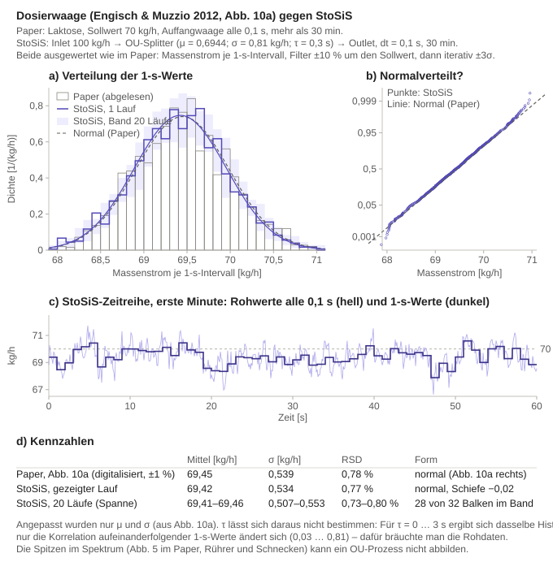
Beide Verteilungen sind normalverteilt und statistisch nicht zu unterscheiden; 28 von 32 Balken des gemessenen Histogramms liegen im Band aus 20 Läufen (Abbildung 11.1). Validiert ist damit die Form der Schwankung, nicht ihre Vorhersage: Mittelwert und Streuung des Splitters sind an die Messung angepasst. Periodische Anteile im Messsignal, etwa von Rührern und Schnecken, bildet der Ornstein-Uhlenbeck-Prozess nicht ab.
11.3Kompartiment-Modelle nach Levenspiel
Levenspiel (1999) setzt reale Apparate aus Rohren (Pfropfenströmung), durchmischten Kesseln, Bypässen, Totzonen und Rückführungen zusammen; für diese Kompartiment-Modelle ist die Verweilzeitverteilung exakt bekannt. Vier davon sind in StoSiS aus Splitter, Behälter und Merger nachgebaut. Durch jedes läuft ein Tracerpuls von 1 kg im ersten Zeitschritt. Verglichen wird die Summenkurve F(t), also der Anteil des Tracers, der bis zur Zeit t ausgetreten ist. Die Referenz ist hier eine Formel, keine Messung: Das prüft, ob StoSiS die Modelle richtig rechnet (Verifikation).
Jede Abbildung zeigt a) das Modell im Original, b) den Nachbau in StoSiS mit seinen Parametern, c) die exakte Lösung, d) den Ablauf in StoSiS und e) beides übereinander mit Mittel und Standardabweichung der Verweilzeit.
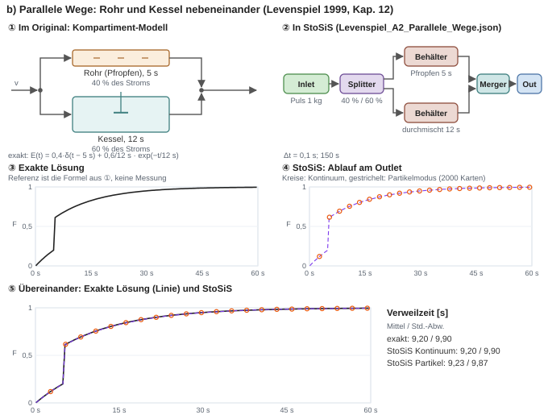
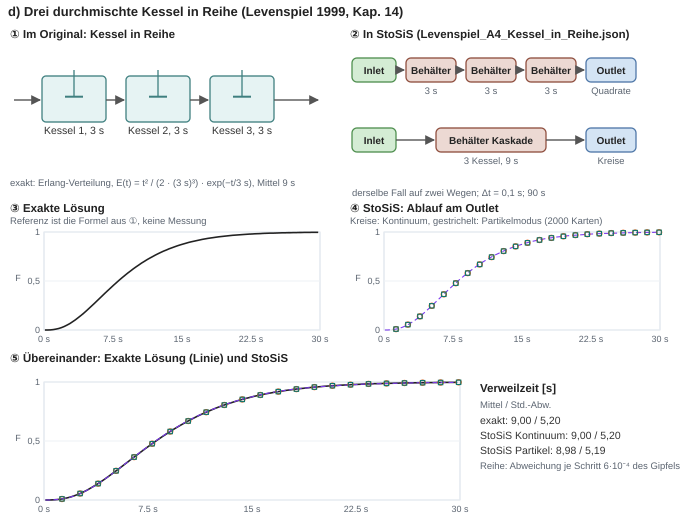
Die beiden übrigen Fälle laufen im selben Test. Ein Kessel mit 20 % Bypass und 20 % Totzone trifft die exakte Lösung je Schritt auf 10−9 des Maximums. Beim Rohr mit Rückführung (R = 1,5) dauert in StoSiS jeder weitere Umlauf einen Zeitschritt länger, weil der Kreis aufgeschnitten wird (Kapitel 3.2): Das Mittel liegt um R · Δt = 0,15 s über den 5 s nach Levenspiel, mit dieser Totzeit stimmt StoSiS exakt.
Im Partikelmodus treffen die Mittel auf höchstens 0,7 %. Einzelne Schritte rauschen, weil ein einzelner Puls nur 2000 Karten hat (Kapitel 9.4).
11.4Kontinuierlicher Mischer
Engisch & Muzzio (2016) bestimmen in einer Direktverpressungs-Linie die Verweilzeit jeder Unit mit einem Tracerversuch und beschreiben sie als Kessel in Reihe. Für den Mischer zeigen sie eine Verweilzeitkurve mit dem Mittel 68,8 s und der Standardabweichung 22,4 s (dort Abb. 17). Daraus folgt die Zahl der Kessel n = (Mittel/Std.-Abw.)² = 9,4; StoSiS bildet den Mischer als Behälter mit einer Kaskade aus 9 Kesseln nach. Die Kurve liegt nur als Bild vor und ist daraus Pixel für Pixel abgelesen: Zeitachse aus den eingezeichneten Linien für Mittel und Standardabweichung, Fläche auf 1 normiert.
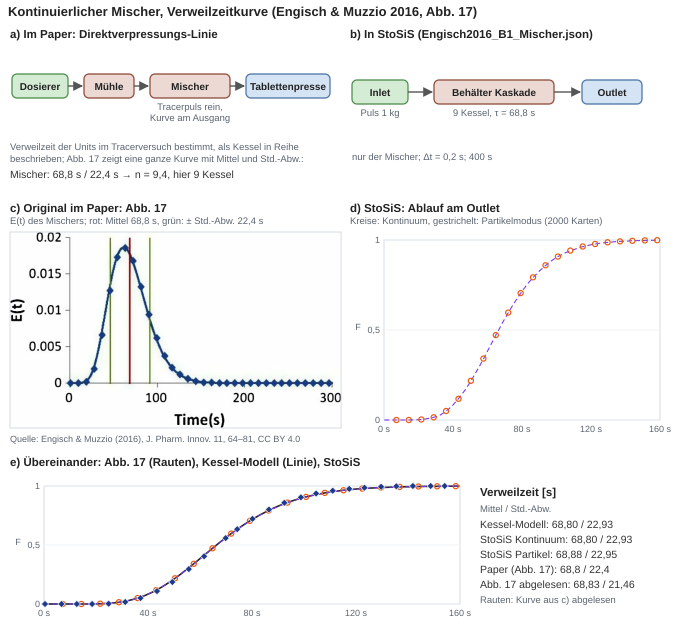
Ein zweiter Fall aus dem Paper (Grundfall mit 41,6 s und 12 s, also 12 Kessel) läuft im selben Test und trifft die Kennzahlen auf 41,60 s und 12,01 s; eine Kurve gibt es dazu im Paper nicht. Geprüft ist damit die Form der Kurve für ein festes Kessel-Modell. Die Zahl der Kessel stammt aus dem Paper und ist nicht vorhergesagt.
11.5Trockengranulier-Linie
Martinetz et al. (2018) untersuchen eine kontinuierliche Linie aus Dosierern, Mischer, Becherförderer, Walzenkompaktor, pneumatischer Förderung und Tablettenpresse. Für jede Unit bestimmen sie aus Sprungversuchen ein Modell (Übertragungsfunktion): Mischer und Kompaktor als zwei Kessel mit Totzeit, die beiden Förderer als reine Totzeit (halbe Sammelzeit), die Presse als ein Kessel mit Totzeit. Die Kennwerte stammen aus Versuchen bei 10 und 15 kg/h und sind für 8 und 12,5 kg/h linear übertragen (dort Tab. 2). In den Versuchen springt der Wirkstoffanteil am Eintritt der ganzen Linie von 10 auf 20 %; gemessen wird er nach dem Kompaktor (NIR-Kugel im Granulatstrom) und an den Tabletten (NIR-Bildgebung, dazu offline UV/Vis), bei allen vier Durchsätzen je zweimal.
Abbildung 11.5 fasst den Fall zusammen. Die Originalgrafiken sind nicht frei lizenziert; die Abbildung ist eine eigene Darstellung, die Messwerte sind aus den Abbildungen des Papers abgelesen.
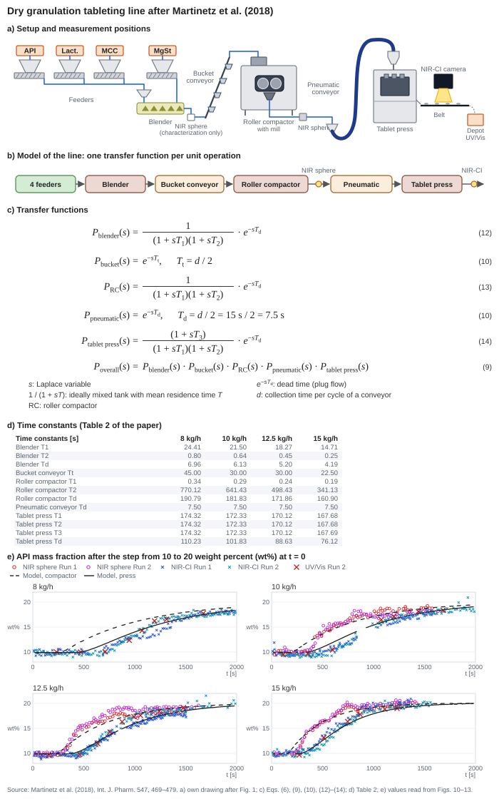
12Begriffe
- Flowsheet, Unit, Port
- Das Fließschema aus Prozesseinheiten (Units), verbunden über nummerierte Ein- und Ausgänge (Ports).
- Makroschritt, Zeitscheibe, Stromscheibe
- Ein globaler Zeitschritt Δt; der Strom an einer Verbindung während dieses Schritts.
- Hold-up
- Material, das zwischen zwei Schritten in einer Unit verbleibt.
- Verweilzeit, Verweilzeitverteilung
- Zeit vom Eintritt bis zum Austritt; ihre Verteilung E(t) und Summenkurve F(t) über allem Material, das einen Behälter durchläuft (Kapitel 7.4).
- Vorrat
- Die Karten im Inneren eines Behälters im Partikelmodus (Kapitel 7.4).
- Rechenreihenfolge
- Die Folge, in der die Units in jedem Zeitschritt rechnen; im Fenster „Struktur“ der Schritt links in jedem Kasten (Kapitel 3.3).
- Kreis
- Gruppe von Units, die sich über Verbindungen gegenseitig erreichen; dort wird aufgeschnitten (Kapitel 3.2).
- Aufgeschnittene Verbindung
- Die Verbindung in einem Kreis, deren Ziel den Strom des vorherigen Schritts liest.
- Lauf, Seed
- Eine vollständige Simulation mit einer Folge von Zufallszahlen; der Startwert dieser Folge.
- Stützstelle
- Größe, an der im Kontinuum die Massenstromdichte gespeichert wird.
- Q3, q3, q3*, q0*
- Verteilungssumme der Masse, ihre Dichte über d, die Massendichte und die Anzahldichte je ln d (Fläche 1).
- Karte
- Gewichtetes Monte-Carlo-Partikel (Simulationspartikel) des Partikelmodus: ein Paket gleicher Partikel aus einem Zeitschritt mit Größe und Masse je Stoff; der Name stammt vom Bild eines Karteikastens (Kapitel 9.1, 9.2).
- Gewicht einer Karte
- Zahl der echten Partikel, die eine Karte in einem Zeitschritt vertritt.
- Kartendichte, Anteil einer Karte
- Die Dichte, nach der Karten über der Größe verteilt werden; der Anteil einer Karte daran innerhalb ihrer Stromscheibe.
- Konto-Verfahren
- Verteilt ganze Karten auf Ziele, ohne je Karte zu würfeln: Jede Karte zahlt auf jedes Konto ein und geht dorthin, wo am meisten steht (Kapitel 9.4).
- Trenngrad, Trennkurve, Trenngröße
- Massenanteil der Partikel einer Größe, der ins Grobgut geht; sein Verlauf über der Größe; die Größe mit dem Trenngrad 0,5 (Kapitel 7.5).
13Literatur
Danckwerts, P. V. (1953): Continuous flow systems. Distribution of residence times. Chemical Engineering Science 2(1), 1–13.
DeVille, R. E. L.; Riemer, N.; West, M. (2011): Weighted Flow Algorithms (WFA) for stochastic particle coagulation. Journal of Computational Physics 230(23), 8427–8451.
Dukowicz, J. K. (1980): A particle-fluid numerical model for liquid sprays. Journal of Computational Physics 35(2), 229–253.
Engisch, W. E.; Muzzio, F. J. (2012): Method for characterization of loss-in-weight feeder equipment. Powder Technology 228, 395–403.
Engisch, W. E.; Muzzio, F. J. (2016): Using residence time distributions (RTDs) to address the traceability of raw materials in continuous pharmaceutical manufacturing. Journal of Pharmaceutical Innovation 11, 64–81.
Gillespie, D. T. (1996): Exact numerical simulation of the Ornstein-Uhlenbeck process and its integral. Physical Review E 54, 2084–2091.
Hennig, M.; Teipel, U. (2016): Stationäre Siebklassierung. Chemie Ingenieur Technik 88, 911–918.
Hesterberg, T. (1995): Weighted average importance sampling and defensive mixture distributions. Technometrics 37(2), 185–194.
Hyndman, R. J.; Fan, Y. (1996): Sample quantiles in statistical packages. The American Statistician 50, 361–365.
Kahn, A. B. (1962): Topological sorting of large networks. Communications of the ACM 5, 558–562.
Kotalczyk, G.; Kruis, F. E. (2017): A Monte Carlo method for the simulation of coagulation and nucleation based on weighted particles and the concepts of stochastic resolution and merging. Journal of Computational Physics 340, 276–296.
Kruis, F. E.; Maisels, A.; Fissan, H. (2000): Direct simulation Monte Carlo method for particle coagulation and aggregation. AIChE Journal 46, 1735–1742.
Lécot, C.; Wagner, W. (2004): A quasi-Monte Carlo scheme for Smoluchowski's coagulation equation. Mathematics of Computation 73, 1953–1966.
Lemmon, E. W.; Jacobsen, R. T (2004): Viscosity and thermal conductivity equations for nitrogen, oxygen, argon, and air. International Journal of Thermophysics 25, 21–69.
Levenspiel, O. (1999): Chemical Reaction Engineering. 3. Auflage, Wiley, New York.
Little, J. D. C. (1961): A proof for the queuing formula: L = λW. Operations Research 9(3), 383–387.
Martinetz, M. C.; Karttunen, A.-P.; Sacher, S.; Wahl, P.; Ketolainen, J.; Khinast, J. G.; Korhonen, O. (2018): RTD-based material tracking in a fully-continuous dry granulation tableting line. International Journal of Pharmaceutics 547, 469–479.
Marsaglia, G.; Bray, T. A. (1964): A convenient method for generating normal variables. SIAM Review 6, 260–264.
Matsumoto, M.; Nishimura, T. (1998): Mersenne Twister: a 623-dimensionally equidistributed uniform pseudo-random number generator. ACM Transactions on Modeling and Computer Simulation 8, 3–30.
Molerus, O.; Hoffmann, H. (1969): Darstellung von Windsichtertrennkurven durch ein stochastisches Modell. Chemie Ingenieur Technik 41(5–6), 340–344.
Plitt, L. R. (1971): The analysis of solid–solid separations in classifiers. CIM Bulletin 64(708), 42–47.
Shima, S.; Kusano, K.; Kawano, A.; Sugiyama, T.; Kawahara, S. (2009): The super-droplet method for the numerical simulation of clouds and precipitation: a particle-based and probabilistic microphysics model coupled with a non-hydrostatic model. Quarterly Journal of the Royal Meteorological Society 135, 1307–1320.
Skorych, V.; Dosta, M.; Heinrich, S. (2020): Dyssol – an open-source flowsheet simulation framework for particulate materials. SoftwareX 12, 100572.
Steele, G. L.; Lea, D.; Flood, C. H. (2014): Fast splittable pseudorandom number generators. Proceedings OOPSLA 2014.
Uhlenbeck, G. E.; Ornstein, L. S. (1930): On the theory of the Brownian motion. Physical Review 36, 823–841.
Welford, B. P. (1962): Note on a method for calculating corrected sums of squares and products. Technometrics 4, 419–420.
Zhao, H.; Kruis, F. E.; Zheng, C. (2009): Reducing statistical noise and extending the size spectrum by applying weighted simulation particles in Monte Carlo simulation of coagulation. Aerosol Science and Technology 43, 781–793.